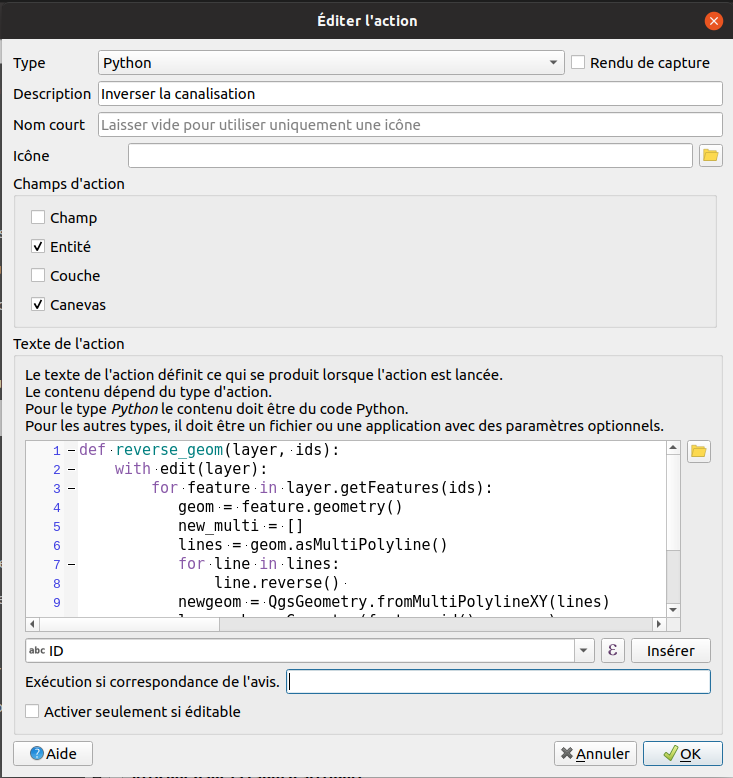

Table of content
Les actions
- Pour connaître le principe des actions dans QGIS, il faut se référer au manuel de QGIS :
- Ajouter la couche
D_OSM_HYDROGRAPHIE/CANALISATION_EAU.shp. - Faire un style rapide pour mettre en évidence le sens de la ligne à l'aide d'une
Ligne de symboledans l'ongletSymbologie.
Les actions par défaut
- Dans la fenêtre des propriétés d'une couche vecteur, aller dans l'onglet
Actions. - Cliquer sur le bouton
Créer les actions par défaut. - Observons quelques actions pour comprendre le fonctionnement.
Notre propre action
- Commençons par un script Python classique, laissons de côté les actions pour le moment.
- Écrire une fonction qui se charge d'inverser une ligne. Cette fonction prend en paramètre la couche vecteur et une liste d'ID des entités.
- Il faut penser à vérifier le type exact de géométrie de nos lignes, dans les propriétés de la couche.
def reverse_geom(layer, ids):
"""Inverser le sens des différentes entités dans la couche layer.
ids est une liste comportant les IDs des entités à inverser.
"""
pass
- Solution :
def reverse_geom(layer, ids):
"""Inverser le sens des différentes entités dans la couche layer.
ids est une liste comportant les IDs des entités à inverser.
"""
with edit(layer):
for feature in layer.getFeatures(ids):
geom = feature.geometry()
lines = geom.asMultiPolyline()
for line in lines:
line.reverse()
newgeom = QgsGeometry.fromMultiPolylineXY(lines)
layer.changeGeometry(feature.id(),newgeom)
layer = iface.activeLayer()
ids = layer.selectedFeatureIds()
reverse_geom(layer, ids)
Incorporons ce code dans une action et adaptons le un peu :

def reverse_geom(layer, ids):
with edit(layer):
for feature in layer.getFeatures(ids):
geom = feature.geometry()
lines = geom.asMultiPolyline()
for line in lines:
line.reverse()
new_geom = QgsGeometry.fromMultiPolylineXY(lines)
layer.changeGeometry(feature.id(), new_geom)
layer = QgsProject.instance().mapLayer('[% @layer_id %]')
reverse_geom(layer, '[% $id%]')
On peut désormais cliquer sur une ligne pour automatiquement inverser une ligne.